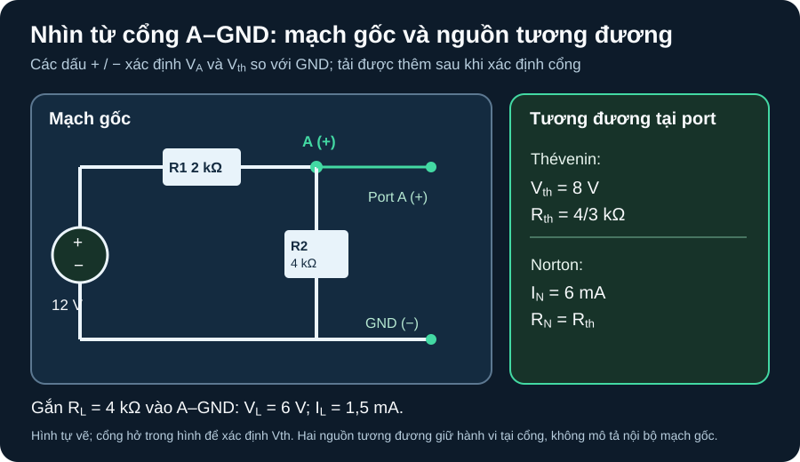

Thévenin & Norton
Rút gọn một mạng tuyến tính nhìn từ đúng hai đầu tải, rồi kiểm bằng hai tải khác nhau.
- Đánh dấu cổng hai cực A–GND, chiều điện áp và dòng tải trước khi rút gọn mạng.
- Tính
Vth,RthvàIncủa mạng tuyến tính DC, kèm đơn vị và giả thiết nguồn lý tưởng. - Kiểm mạch gốc và mạch tương đương với hai giá trị tải bằng cùng quy chiếu.
- Giữ nguồn phụ thuộc và dùng nguồn thử để tìm điện trở nhìn vào khi cách triệt nguồn độc lập không đủ.
Mạch tương đương Thévenin là nguồn áp lý tưởng Vth nối tiếp Rth; Norton là nguồn dòng lý tưởng In song song cùng Rth. Chúng cho cùng quan hệ điện áp–dòng tại cổng với tải ngoài trong phạm vi mô hình tuyến tính, không khẳng định dòng/công suất bên trong mạch gốc giống mạch tương đương. MIT 6.002 Lecture 3, trang PDF 14–21 trình bày mạch một cổng, Thévenin và Norton; sơ đồ số bên dưới là ví dụ tự dựng của giáo trình.
1. Chọn cổng và lấy ba thông số

Vth; dấu dương của điện áp cổng tại A. Mọi kết quả sau chỉ áp dụng khi nhìn từ chính cổng A–GND.Mô tả topology và cực tính bằng chữ
Nguồn áp lý tưởng 12 V đặt cực âm vào GND, cực dương lên đầu trái R1 2 kΩ. Đầu phải R1 là nút A. R2 4 kΩ nối từ A xuống GND. Cổng tải hở gồm cực dương A và cực âm GND; khi gắn tải RL, nó nối từ A xuống GND, song song R2. Điện áp tải VL=V(A)−V(GND), dòng IL quy ước đi từ A qua RL về GND.
- Điện áp hở mạch: cổng chưa gắn
RL. Dòng qua R1 và R2 là12 V/(2 kΩ+4 kΩ)=2 mA. Do đóVth=Voc=2 mA×4 kΩ=8 V, dương tại A. - Điện trở nhìn vào: đặt nguồn áp lý tưởng độc lập 12 V về 0 V, nghĩa là thay riêng nguồn lý tưởng bằng dây ngắn. Từ A nhìn xuống GND, R1 và R2 song song:
Rth=(2 kΩ×4 kΩ)/(2 kΩ+4 kΩ)=4/3 kΩ≈1,333 kΩ. Không tháo R1 hoặc R2. Quy tắc triệt nguồn và giới hạn với nguồn phụ thuộc xem A11 và MIT 6.200, Lecture 5a, trang PDF 4–6. - Norton:
In=Vth/Rth=8 V/(4/3 kΩ)=6 mA, chiều nguồn Norton bơm từ GND lên A để tạo điện áp hở dương ở A. Kiểm trực tiếp bằng ngắn mạch cổng: R2 bị bypass, nên dòng từ nguồn qua R1 và dây ngắn là12 V/2 kΩ=6 mA. Đây là phép tính của mạch lý tưởng, không phải chỉ dẫn ngắn mạch nguồn vật lý.
Phương trình tải: với RL>0, VL=Vth·RL/(Rth+RL) và IL=Vth/(Rth+RL). Ở dạng Norton, VL=In·(Rth∥RL); thay In=Vth/Rth cho đúng cùng phương trình. Đối chiếu theo KCL hoặc phân áp ở mạch gốc là bước kiểm độc lập, không chỉ là thay cùng một công thức hai lần.
2. Kiểm bằng hai tải khác nhau
| Tải | Mạch gốc: R2∥RL, VL | Thévenin/Norton: VL, IL | Sai khác |
|---|---|---|---|
RL=4 kΩ | 4k∥4k=2 kΩ; VL=12×2/(2+2)=6 V | VL=8×4/(4/3+4)=6 V; IL=1,5 mA | 0 V, 0 mA |
RL=2 kΩ | 4k∥2k=4/3 kΩ; VL=12×(4/3)/(2+4/3)=4,8 V | VL=8×2/(4/3+2)=4,8 V; IL=2,4 mA | 0 V, 0 mA |
Khi thay đổi tải, Vth và Rth của mạng nguồn nhìn từ A–GND giữ nguyên trong mô hình tuyến tính. Điện áp và dòng tải đổi. Nếu chuyển cổng sang hai nút khác, phải tìm lại mạch tương đương; không tái sử dụng bộ số 8 V và 4/3 kΩ.
3. Có nguồn phụ thuộc: dùng nguồn thử
Trong một mạng khác, tại cổng A–GND có điện trở R=1 kΩ từ A xuống GND và một nguồn dòng phụ thuộc lý tưởng từ GND hướng lên A với Idep=gVA, g=0,5 mS, VA=V(A)−V(GND). Không có nguồn độc lập. Muốn tìm điện trở nhìn vào, đặt nguồn thử 1 V dương tại A, âm tại GND. Dòng mà nguồn thử cấp vào mạng là Itest=VA/R−gVA=1 V/1 kΩ−0,5 mS×1 V=0,5 mA. Vậy Rin=Vtest/Itest=1 V/0,5 mA=2 kΩ. Nguồn phụ thuộc phải ở lại vì nó còn đáp ứng với điện áp thử. Mẹo Rth=Vth/In không dùng được ở ví dụ này: không có kích thích độc lập nên cả điện áp hở lẫn dòng ngắn mạch bằng 0, tỷ số là 0/0. MIT 6.200, Lecture 5a, trang PDF 4–8 trình bày nguồn phụ thuộc và phép nguồn thử.
Nếu g bằng 1 mS, hệ số dòng thử bằng 0 trong model lý tưởng này: phép chia trên không còn cho một Rin hữu hạn. Vì vậy luôn kiểm dấu, chiều nguồn điều khiển và điều kiện nghiệm trước khi diễn giải số điện trở tương đương.
4. Hoạt động tái lập: bảng tải và công suất
Vẽ lại mạch A12-1, đánh dấu cổng A–GND,
VLdương tại A vàILtừ A xuống tải. TínhVth=8 V,Rth=4/3 kΩ,In=6 mAtrước khi nối từng tải.Lập ba hàng
RL=1, 4, 8 kΩ. TínhVL=8·RL/(4/3+RL)(kΩ trong tử/mẫu) vàIL=VL/RL(V/kΩ→mA). Tính lại độc lập bằngRp=4 kΩ∥RL,VL=12·Rp/(2 kΩ+Rp). So sánh từng hàng với bảng kỳ vọng.Nếu dùng simulator, lưu sơ đồ/netlist, nguồn, chiều cổng, phiên bản phần mềm và ba lượt DC operating point; so sánh với bảng. Các số in ở đây là kết quả tính tay kỳ vọng, chưa là dữ liệu mô phỏng hoặc đo.
RL | R2∥RL | VL từ mạch gốc = tương đương | IL |
|---|---|---|---|
| 1 kΩ | 0,8 kΩ | 24/7 V ≈ 3,429 V | 24/7 mA ≈ 3,429 mA |
| 4 kΩ | 2 kΩ | 6 V | 1,5 mA |
| 8 kΩ | 8/3 kΩ | 48/7 V ≈ 6,857 V | 6/7 mA ≈ 0,857 mA |
Giới hạn công suất cực đại: trong mạng DC tuyến tính với Rth>0 là điện trở thuần và tải RL>0, PL=Vth²·RL/(Rth+RL)². Vì (RL+Rth)²≥4RL·Rth, nên PL≤Vth²/(4Rth), bằng khi RL=Rth=4/3 kΩ. Với ví dụ này Pmax=8²/(4×4/3 kΩ)=12 mW. Đây là công suất trong model lý tưởng tại cổng; chọn linh kiện thật còn phải kiểm dung sai, nhiệt và rating theo datasheet. MIT 6.002 Lecture 3, trang PDF 20–21 đặt bài toán tải trên mạch tương đương.
Cổng phần cứng: sơ đồ là ví dụ nguồn DC lý tưởng trên giấy. Chưa xác định nguồn cách ly, giới hạn dòng, công suất từng điện trở, dung sai, thiết bị đo hay quy trình phê duyệt. Không ngắn mạch cổng của nguồn thật để “đo Norton” khi chưa được người có chuyên môn kiểm an toàn và đặc tính nguồn.
Giữ nguyên mạch nguồn 12 V, R1=2 kΩ, R2=4 kΩ của A12-1. Gắn RL=2 kΩ giữa A và GND. Không đổi vị trí cổng.
Vth, Rth, In từ mạch gốc; ghi dấu và chiều.VL, IL, PL. Kiểm VL bằng mạch gốc và bằng Norton.1. Cổng A–GND hở cho Vth=12×4/(2+4)=8 V, dương tại A. Triệt nguồn 12 V lý tưởng: Rth=2k∥4k=4/3 kΩ. In=8/(4/3)=6 mA, hướng từ GND lên A trong nguồn Norton.
2. VL=8×2/(4/3+2)=4,8 V, IL=4,8 V/2 kΩ=2,4 mA, PL=4,8 V×2,4 mA=11,52 mW. Ở mạch gốc, R2∥RL=4k∥2k=4/3 kΩ nên VL=12×(4/3)/(2+4/3)=4,8 V. Ở Norton, Rth∥RL=(4/3)∥2=0,8 kΩ và VL=6 mA×0,8 kΩ=4,8 V.
3. Không. Một cổng khác có đặc tuyến áp–dòng khác; phải xác định lại mạng nhìn từ hai cực mới và tìm Vth, Rth, In mới.
Rubric 4 điểm: 1 điểm cổng, dấu và chiều; 1 điểm ba thông số đúng đơn vị; 1 điểm điện áp, dòng, công suất cùng hai phép kiểm tải; 1 điểm giải thích giới hạn theo cổng.